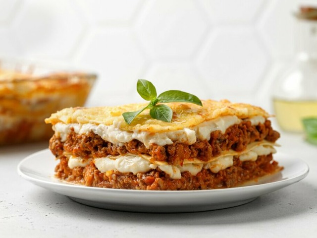

Lasanha bolonhesa ao molho branco
Ingredientes
- 1 fio de azeite
- 500 gramas de carne moída
- 1 cebola média picada
- 2 dentes de alho picado
- 340 gramas de molho de tomate
- Orégano e sal a gosto
- 3 colheres de sopa de farinha de trigo
- 2 colheres de sopa manteiga
- Noz-moscada a gosto
- 300ml de leite
- 400 gramas de massa de lasanha
- 350 gramas de queijo mussarela
- 350 gramas de presunto
Modo de preparo
- Em uma panela, adicione o fio de azeite e dê uma leve fritada na carne moída.
- Tempere com sal e mexa.
- Acrescente a cebola, o alho e refogue.
- Despeje o molho com um pouquinho de água, o orégano e deixe cozinhar até reduzir e ficar cremoso. Reserve.
- Dissolva a farinha em um copo com um pouco de leite para que não empelote.
- Em uma panela, derreta a manteiga com a noz-moscada.
- Acrescente o leite, a farinha dissolvida, o sal, misture e deixe cozinhar até engrossar. Reserve.
- Prepare a massa em água fervente conforme as instruções do fabricante.
- Em um refratário, forre o fundo com o molho de carne moída e cubra com uma camada de massa. Coloque as fatias de queijo e despeje o molho branco por cima. Faça uma camada de presunto, mais uma de molho de carne moída e cubra com a massa. Finalize com uma última camada de molho branco e cubra com presunto e queijo.
- Leve ao forno preaquecido a 180º graus até o queijo gratinar.
- Agora é só servir.
Bom apetite.